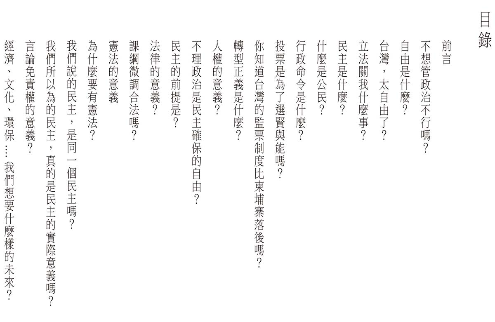

democracy de cafe
定價：500元
內容：epub + mobi + pdf 三種格式一次滿足。pdf為已絕版的「蒂瑪小姐咖啡館」紙本初版完整電子檔，直式書寫，適合用電腦或是大螢幕平板閱讀。epub 與 mobi 為重新針對電子閱讀器優化後的電子書版本。橫式書寫，適合使用手機或電子墨水顯示器使用。
立刻購買我們試圖以對話小說的方式對社會議題進行思辨，我們努力去了解「什麼是民主」，並依此展開我們對民主的想像，走出屬於我們這個時代的公民行動。
在318之後，我們一直在思考，大部分的人為了忙於工作，能夠用在關心政治的時間太有限了。對很多人來說，政治看起來很遙遠，但實際上我們生活的種種都跟政治有關。到底該怎麼做，才有辦法讓更多人可以用更簡單的方式瞭解社會議題，進而關心政治呢？
於是我們成立了「國會調查兵團」網站，讓一般民眾可以在這個網站上直接投稿立委的表現。我們希望透過這個方式，鼓勵大家可以去看立法院議事影片紀錄，把看到的立委表現記錄在這個網站。
但人的時間有限，一天能夠花15分鐘關心一下政治，已經是極限。有沒有可以更快吸收議題現況的方式呢？我們試著做更多的嘗試，像是經營「公民廟口-立委在做天在看」粉專，傳播經過剪輯的立委質詢影片，試圖降低理解質詢內容的難度，讓更多人理解觀看立委質詢表現的重要性。我們成立了「杜老爺小酒館」，試圖用漫畫的方式，表達對時事的看法。我們開了「蒂瑪小姐咖啡館」粉專，試圖以對話小說的方式對社會議題進行思辨。
在這個過程中，我們努力去了解「什麼是民主」，並依此展開對民主的想像，走出屬於我們這個時代的公民行動。我們是「國會調查兵團」，我們相信政治討論不是名嘴、立委的專利，而是生活的一部分。我們認為監督立委、監督政府是每一個人都有能力做的事，而這一切我們選擇從自己做起，我們相信只要我們願意行動，每個人都有能力讓這個社會變得更好。
持續投入政治行動除了需要熱情，也需要經濟支撐。2014/9~2015/10這段時間，「國會調查兵團」用純志工模式完成了一個網站（cic.tw）、每天盯ivod並剪輯了152支立委質詢影片、產出了破百篇的文章、產出八十來篇對時事嘲諷的圖文。針對食安修法找了國民兩黨立委做了食安訪談，並整理逐字稿紀錄公開於網路上。以蒂瑪小姐咖啡館粉專為主辦舉辦了5場的現場D day活動。
我們對發展公民可參與的政治行動、推廣降低政治參與門檻有著極大的熱情，但人終歸需要生活。蒂瑪小姐咖啡館實體書出版於2016年1月，當時我們向公民覺醒聯盟提出「國會調查兵團立委選前密集監督計畫」專案企劃，以支應國會調查兵團計畫一年的人事與軟硬體費用。我們很幸運地在8個月內就賣完500本書，長期來看，我們也必須要持續透過銷售以取得自我商轉的可能。我們感謝公民覺醒聯盟願意資助國會調查兵團計畫，但未來我們必須要靠自己的能力活下去，才能讓兵團計畫持續前進，
「蒂瑪小姐咖啡館」要出電子書了。如果你願意支持我們繼續寫下去、繼續監督國會，請買一本書，讓我們可以繼續走下去。
包涵以下目錄條列，共21篇文章

一、長期監督立委，持續產出監督影片。
每天要接收的訊息很多，每個人一天可能只有5~10分鐘可以關心國會，我們透過固定人員每日監看，爬梳一天重要的質詢內容，篩選出值得關注的議題，剪輯成影片並撰寫容易理解的文案，讓更多人可以輕鬆地理解國會最近正在討論什麼。這部分是整個計畫中最吃編輯人力的部分。每月所需費用約5~6萬。
二、國會調查兵團網站維護
兵團網站必須跟著實際使用狀況做改版，遇到網路攻擊時也必須要有人可以及時查詢問題並做緊急處理。由過去無償撰寫網站的志工繼續協助這個部分的後續維護，目前改採外包形式。維護人員與定期硬體設備租用，每月所需費用約2~3萬。
三、建立公民智庫，彙整更多公民對於不同議題的看法與建議。
針對每周相關議題，與有相關專長的贊助者進行信件聯繫，收集大家的意見，並且整理出相關的論述。這部分需要固定的編輯人力進行聯繫與彙整的作業，每月所需費用約2萬。
不是，我們沒有去申請非營利組織（人民團體）。因為申請人民團體有許多的限制，像是必須要30人以上，全國性協會必須要有來自7個以上縣市的人作為發起成員，必須要召開會員大會選出理事監事，必須要有一個固定辦公室等等，這些都不是兵團目前運作的人員所能夠負荷與處理的。因此稅務的部份我們採用登記工作室的方式處理。所有購買行為我們都會開發票。